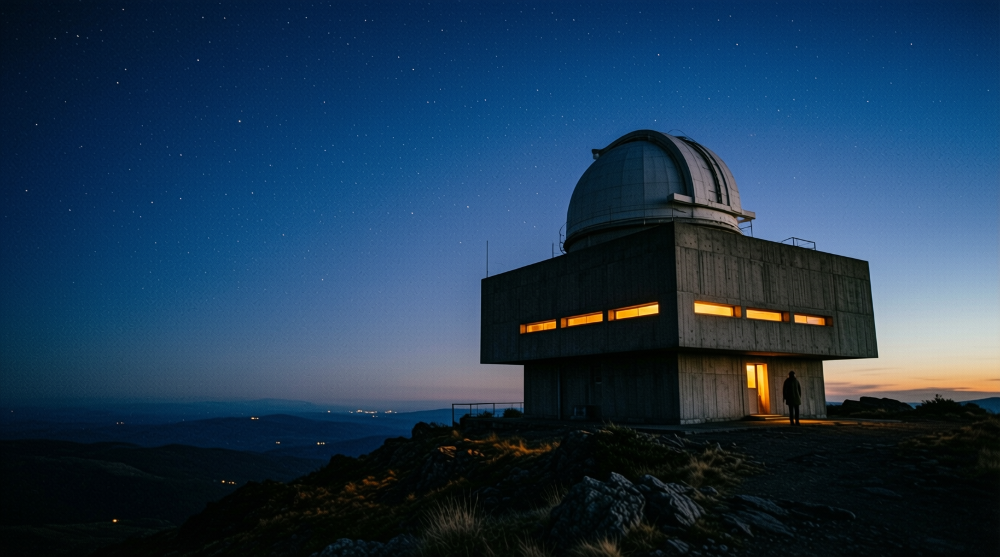

NIGHT 04 · Public programme
LUMEN OBSERVATORY
The sky is a shared archive
Night 04 · The Archive Session
One evening, three instruments, and the sky kept open past midnight
Night 04 turns the observatory into an open reading room. Each telescope is tuned to a different shelf of the sky, and every reservation is a seat at that archive.
I
The Deep Archive
A 20-inch reflector pointed at the globular cluster NGC 6397, its stars resolved one by one.
II
The Local Sheet
A wide-field refractor tracing the Milky Way's nearest dust lanes across the southern horizon.
III
The Shared Lens
A solar-system scope held to Saturn, and a running logbook where anyone may add an observation.
The sky is a shared archive — no page is owned, only borrowed for the night.
Every observation made at Lumen is entered into a single paper logbook, kept since the first season. Night 04 opens that logbook to the floor, so the evening reads as a continuous conversation between the instruments and the people who hold them.
On the night
How an evening at the observatory runs
01
Arrive at dusk
The terrace opens at 19:30, half an hour before first dark. Tea is on the stone bench.
02
Claim an instrument
Each reserved telescope carries a small card naming its target and the shelf it reads from.
03
Write one line
Before you leave, add a line to the shared logbook. The archive is built one night at a time.
Reservation
Reserve a telescope
Night 04 runs on 18 October from 19:30. Seats are limited, and the telescopes are reserved rather than the tickets. Tell us which instrument you would like to hold.
Reserve a telescopeReservations open two weeks before the night and close at noon on 18 October. The logbook, the tea, and the sky are all free.